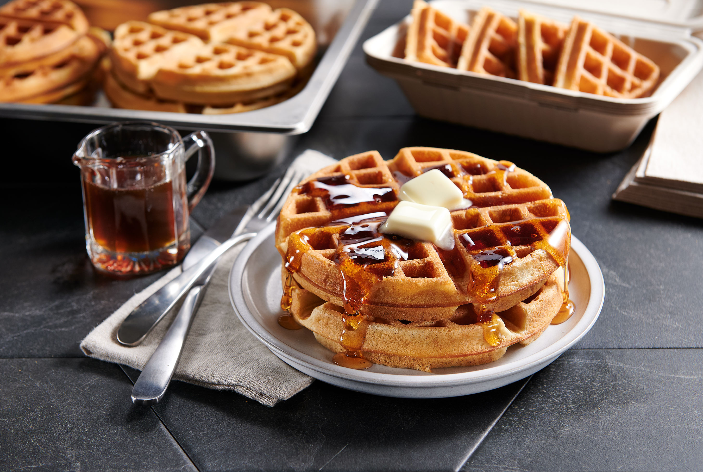

Recipe Belgian Waffles
Home

Description
Waffles are a beloved breakfast classic known
for their crisp exterior, soft interior,
and signature honeycomb pattern that holds
toppings perfectly. Made with a simple batter
of flour, eggs, milk, butter, and a touch of sugar,
waffles become golden and airy when cooked in a hot waffle iron.
Their delightful texture and subtle sweetness allow flavors
like maple syrup, fruit, or whipped cream to shine.
Originating in Europe and evolving through centuries,
waffles have become a universal favorite enjoyed
in countless variations. Whether served as a cozy
morning treat or dressed up for dessert, their combination
of warmth, crunch, and softness makes them irresistible.
From Belgian-style deep pockets to thin, crispy versions,
waffles continue to charm with their comforting simplicity.
Ingredients
4 people
- Flour 332 g
- Baking powder 2.5 tsp
- Sugar 24 g
- Milk 198 ml
- large eggs 2
- vanilla essence 1/2 tsp
- unsalted butter 90 g
Steps
- Whisk dry: - place the flour, sugar, baking powder and salt in a large mixing bowl. Whisk to mix.
- Whisk in wet: - Add milk, eggs and vanilla. Whisk to combine. Add melted butter then whisk until lump free. The batter should be pourable but thick, slightly thinner than pancakes.
- Recommended resting: - Cover then refrigerate overnight, or for at least 2 hours. Softer insides, better flavour. Else, proceed immediately with cooking.
- Preheat: a waffle maker (Note 2, inc setting options). A non stick one will not need oil, plus there is butter in the batter.
- Cooking: Use a ladle to pour batter in to just cover the iron. Don't get greedy, it will leak out the sides! Cook until golden and crisp, my good waffle iron takes 3 1/2 minutes, my Kmart one takes 6 minutes.
- Serving: Transfer onto plates and serve as you go, with desired toppings. Or, put on a rack and keep warm in a preheated 70°C/150°F oven while you continue cooking!